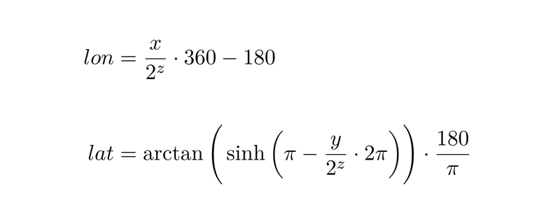

Следующим шагом после GPS модуля, стало его практическое применение в моем проекте. Возможно кому-то этот пост будет интереснее.
|
+ |
=? |
Для начала немного исходных данных:
Требуется:
Имеется:
Краткое содержание предыдущих 160 серий
В Qt с незапамятных времен был замечательный пучок-отросток QtMobility и был он настолько замечательный, что пожил, пожил, да и загнулся. Да, конечно, он никуда не делся, и даже используется в моей N9 и чьём-нибудь Blackberry, но факт в том, что Digia больше не будет поддерживать этот API at-all.
Но в Digia работают не дураки, они постепенно взялись перетягивать куски QtMobility в Qt5. Одной из таких компонент стала QtLocation. В Qt 5.3 можно увидеть только кусочек QtLocation, который Digia именует QtPositioning. Надо сказать приятная штука, скормил ей NMEA из локального сокета, а она тебе в ответ объектик на блюдечке с голубой каёмочкой. Все это здорово, но зачем мне позиция если нет карты? Тут Digia наверно задалась тем же вопросом, и в Qt5.4 я надеюсь она зарелизит QtLocation со всеми его плюшками.
Приступая к работе
Я не буду в статье описывать как собирать Qt из исходников, по скольку там тьма тонкостей связаных с платформой под и на которых происходит сборка. Перейду сразу к програмной части.
Для начала создаем директорию, в которой будет лежать плагин, например <путь к исходному коду QtLocation>/src/plugins/geoservices/osmscout
Затем создаем проектный файл osmscout.pro (тут может быть любое другое название) следующего содержания:
TARGET = qtgeoservices_osmscout #название вашей библиотеки, в конечном итоге будет примерно таким libqtgeoservices_osmscout.so
QT += location-private positioning-private network #указываем куски Qt, которые будут использованы в проекте,
#линковка с библиотеками и добавление путей к заголовочным файлам будет
#происходить автоматически
PLUGIN_TYPE = geoservices #тип плагина, тут нужно просто поверить на слово
PLUGIN_CLASS_NAME = QGeoServiceProviderFactoryOsmScout # имя класса, по которому будет осуществляться доступ к интерфейсам плагина
load(qt_plugin) #выполняем qt_plugin.prf для окончательной настройки плагина основываясь на переменных выше
Отлично! Какие мы все молодцы. Теперь можно открыть проект в QtCreator и наслаждаться жизнью приступить к разработке самого плагина.
Добавляем класс, который мы обещали qt_plugin'у — QGeoServiceProviderFactoryOsmScout.
class QGeoServiceProviderFactoryOsmScout: public QObject, public QGeoServiceProviderFactory
{
Q_OBJECT //Кто не знает что это, выйдите я вас не звал!
Q_INTERFACES(QGeoServiceProviderFactory) //Этот макрос очевидно скушается qmake препроцессором как и предыдущий
//и развернется в нечто прекрасное. Во что именно сказать затрудняюсь - не смотрел.
Q_PLUGIN_METADATA(IID "org.qt-project.qt.geoservice.serviceproviderfactory/5.0"
FILE "osmscout_plugin.json") // Это более интересные строчки, о них чуть ниже по тексту.
public:
QGeoMappingManagerEngine *createMappingManagerEngine(const QVariantMap ¶meters,
QGeoServiceProvider::Error *error,
QString *errorString) const; //Из интерфесов мне пока нужна только картография, его я и буду имплементировать.
};
Помимо метода createMappingManagerEngine вы можете также реализовать один из следующих интерфейсов:
virtual QGeoCodingManagerEngine *createGeocodingManagerEngine(const QVariantMap ¶meters,
QGeoServiceProvider::Error *error,
QString *errorString) const; // Интерфес предоставляет геокодирование
virtual QGeoRoutingManagerEngine *createRoutingManagerEngine(const QVariantMap ¶meters,
QGeoServiceProvider::Error *error,
QString *errorString) const; // Интерфейс предоставляет маршрутизацию
virtual QPlaceManagerEngine *createPlaceManagerEngine(const QVariantMap ¶meters,
QGeoServiceProvider::Error *error,
QString *errorString) const // Интерфейс предоставляет поиск Point-of-interest.
По поводу макроса Q_PLUGIN_METADATA, обрабатывается он аналогично многим макросам qmake препроцессором. Нам важны только аргументы:
IID «org.qt-project.qt.geoservice.serviceproviderfactory/5.0» — это общий идентификатор интерфейса, который мы реализовываем
FILE «osmscout_plugin.json» — файл с подробным описанием, а что мы всетаки реализовали.
О загадочном и мистичесом файле osmscout_plugin.json
По поводу формата файла я думаю вопросов нет, а вот по содержанию вопросы большие. Ответ на эти вопросы пока может дать только исходный код, возможно в будущем это будет где-то документировано самой Digia.
Итак, поля:
Фичи делятся на категории:
От себя добавлю:
Файл с описанием интерфейсов Вашего плагина — это своего рода обещание пользователю того, что он может сделать с его помощью.
Вывод: не обещайте больше чем может ваш плагин, ставя функции чем-то вроде:
qDebug() << "Wanna LocalizedPlacesFeature? Comming soon...";
Этого ни вам, ни пользователю ни к чему.
У меня интерфейс достаточно простой, в сухом остатке я получил вот это:
{
"Keys": ["osmscout"],
"Provider": "osmscout",
"Version": 100,
"Experimental": false,
"Features": [
"OfflineMappingFeature"
]
}
Имплементация картографического сервиса
Как было видно выше, интерфейс нашего плагина обязуется вернуть пользователю QGeoMappingManagerEngine. Сейчас я активно ковыряю векторные карты с непрерывным рендерингом, но пока ничего достаточно вменяемого для показа не готово. Поэтому расскажу об уже имеющемся и сносно работающем плиточном тайловом сервисе.
Наследоваться нужно будет от QGeoTiledMappingManagerEngine, который несет в себе стопку обязанностей со стороны программиста.
Исходя из RAII в конструкторе нужно сделать следующее:
QGeoCameraCapabilities cameraCaps;
cameraCaps.setMinimumZoomLevel(0.0);
cameraCaps.setMaximumZoomLevel(19.0);
setCameraCapabilities(cameraCaps); //Задаем поддерживаемые картой уровни приближения
//тут же можно заявить о поддержки всяких вкусняшек
//по типу склонения карты относительно горизонта и т.п.
setTileSize(QSize(256, 256));//Размер тайла. Выбран стандартный для OSM размер,
//который по утверждению самих OSM продиктован Google.
setCacheHint(QGeoTiledMappingManagerEngine::MemoryCache);//Эта опция выставлена намерено,
//поскольку мы генерируем тайлы по данным с жесткого диска,
//хранить их в дисковом кэше смысла нет.
QList<QGeoMapType> mapTypes;
mapTypes << QGeoMapType(QGeoMapType::StreetMap, tr("Day Street Map"), tr("OpenStreetMap street map"), false, false, OsmScoutDefaultDayMap);
setSupportedMapTypes(mapTypes);//Типы поддерживаемых вариантов карт.
//Опция нужна при наличии например различной стилизации или спутниковых карт
QGeoTileFetcherOsmScout *tileFetcher = new QGeoTileFetcherOsmScout(this);//Создание загрузчика тайлов
setTileFetcher(tileFetcher);
Идем глубже
Остались два ключевых класса которые необходимо имплементировать чтобы получить результат:
Наследник QGeoTileFetcher и наследник QGeoTiledMapReply.
QGeoTileFetcher требует переопределения только одного интерфейса:
QGeoTiledMapReply *getTileImage(const QGeoTileSpec &spec);
Этот метод должен вернуть указатель на объект класса наследника от QGeoTiledMapReply в соответствии с QGeoTileSpec. QGeoTileSpec определяет спецификацию тайла.
Ключевыми в нем являются следующие поля:
Для кого-то возможно пригодятся отставшиеся 2 поля mapId, version.
Небольшой ликбез по координатной сетке тайлов
Для тех кто не знает тайлы в OSM да и в Google имеют застолбленные под собою номера.
Номера распределяются слева-направо, сверху-вниз на проекции Меркатора, разбитой на 2zoom секторов.
Подробнее об этом можно почитать тут.
Для меня самым важным из этой статьи была формула обратной конвертации номеров тайлов в географические координаты, по скольку libosmscout, которую я использовал поддерживала общение только по средствам географических координат:

По QGeoTileFetcher сказать больше нечего. А вот по QGeoTiledMapReply есть. Наследник этого класса должен выполнить 4 функции:
Небольшая рекомендация:
Метод getTileImage(const QGeoTileSpec &spec) вызывается в графическом треде приложения, отсюда вытекает неприятный момент — если он занимает сколь угодно значимое время, GUI подвисает. Выходите из getTileImage чем быстрее тем лучше, рендеринг/скачивание/обработку тайлов делайте в отдельном потоке.
Когда все готово
Qt очень идейный framework и любая идея в нем приводит к результату. В случае с нашим плагином после успешной имплементации нам достаточно будет создать новый QML-проект, и написав всего пару строк, получить карту:
import QtQuick 2.0
import QtLocation 5.3
import QtPositioning 5.2
Rectangle {
id: rect
width: 800
height: 600
Map {
id: map
anchors.fill: parent
plugin: Plugin {
name:"osmscout" //Имя нашего плагина вписывать тут
allowExperimental: true //Разрешаем использование экспериментальных плагинов
}
}
}
К чему я все это написал
Готовый плагин можно найти в моем форке qt-location на gitorious:
qt.gitorious.org/qt/qtlocation-semlanik/source/798639ef13821155730cb83abac7e7821506df31:
Он использует libosmscout в качестве оффлайн фреймфорка, мой форк от него на sourceforge:
sourceforge.net/u/semlanik/libosmscout/ci/master/tree
Ну и конечно же все это работает в связке с GPS модулем:
Это все делается для моего OpenAutomotive проекта.
Спасибо всем осилившим.